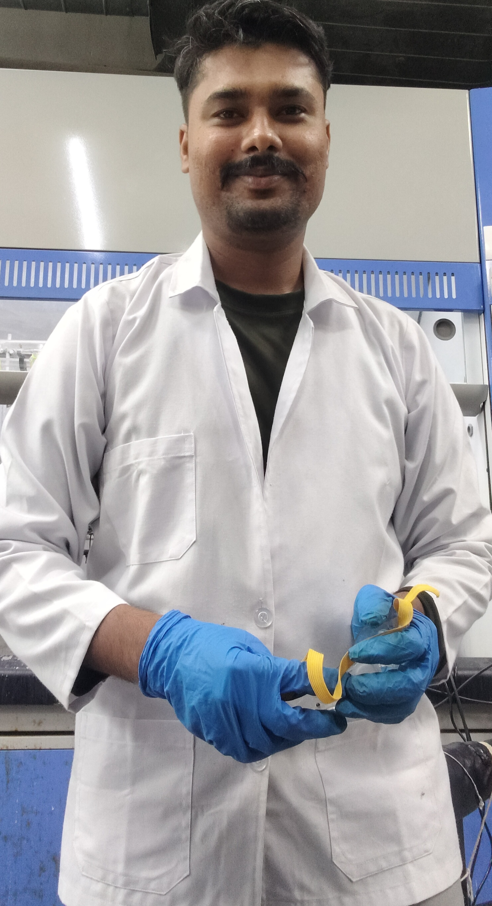
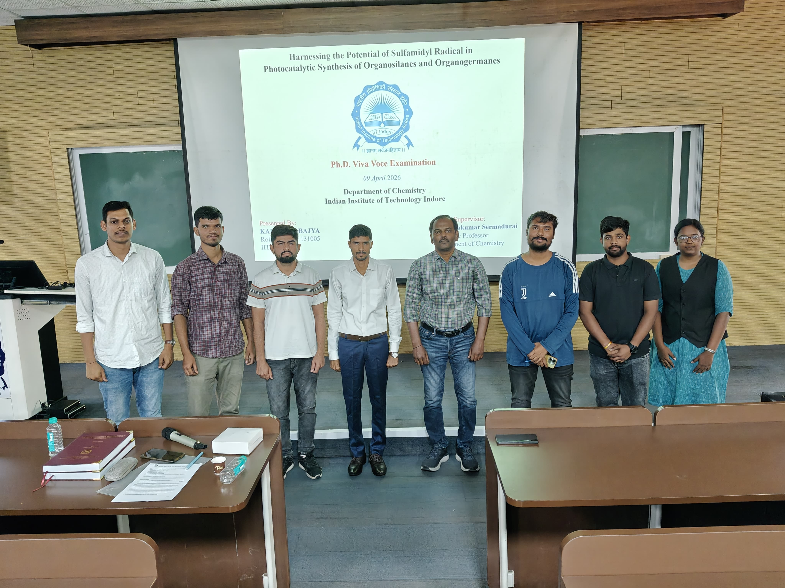

PhD Researcher in Photoredox Catalysis & Synthetic Organic Chemistry
| CSIR-NET (LS) Dec 2023 | AIR 54 |
| GATE 2023 | AIR 1204 |
| DU M.Sc. Entrance (2020) | AIR 39 |
| IIT JAM | AIR 801 |
| Peer-Reviewed Publications | 1 Total |

I am Vivekanand Choubey, a PhD researcher in Chemistry at IIT Indore, working under the guidance of Dr. Selva Kumar Sermadurai. My current research focuses on the development of novel methodologies for the photocatalytic synthesis of organosilanes, with an emphasis on visible-light-driven catalytic transformations, sustainable C–Si bond formation, and innovative synthetic methodology development.
Prior to joining IIT Indore, I worked as a Project Associate-I at CSIR–Central Drug Research Institute (CSIR-CDRI), Lucknow, india and as a Project Assistant at Shiv Nadar University. I hold an M.Sc. in Chemistry from the University of Delhi. My research interests lie firmly within photoredox catalysis, synthetic organic chemistry, and catalytic methodology development, with the ongoing goal of designing efficient, sustainable, and innovative solutions for modern chemical synthesis.
"Every man who does creative work has to be an optimist. You have to believe that something will work out, even if you fail a hundred times." — Herbert C. Brown (Nobel Laureate in Chemistry)
Developing innovative visible-light-driven synthetic methodologies for the photocatalytic synthesis of organosilanes, focusing on sustainable C–Si bond formation, photoredox catalysis, and catalytic reaction design under the supervision of Dr. Selva Kumar Sermadurai.

Worked on a DST-SERB sponsored project involving transition metal-catalyzed enantioselective C–X bond formation, focusing on asymmetric synthesis and reaction optimization under the supervision of Dr. Nilanjana Majumdar (principal Scientist), a former postdoctoral researcher from the group of Benjamin List (Nobel Prize in Chemistry, 2021).
Contributed to a DST-INSPIRE funded interdisciplinary research project focused on the biophysical characterization of extracellular vesicles using single-molecule detection (SMD) methods under the supervision of Dr. Tatini Rakshit.
Conducted research on the synthesis, characterization, and applications of silver and gold nanoparticles, building a strong foundation in analytical techniques and materials chemistry under the guidance of Prof. R.K. Sharma.
Developing core competencies in synthetic methodologies and fundamental structural characterization.